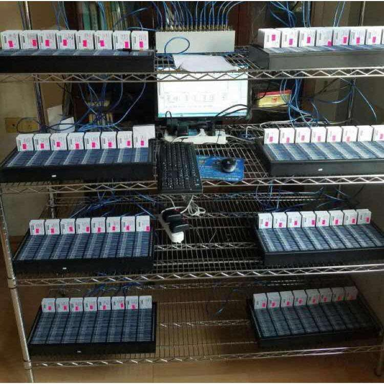
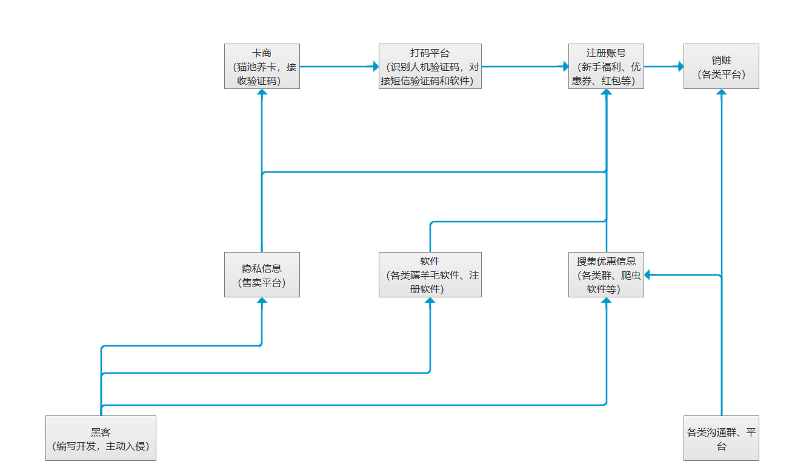

分享人：
目录
1.背景介绍
2.薅羊毛产业链
3.风控
4.邪道
5.更多讨论
6.参考文献
我们所说的黑产羊毛党，不是日常抢个几块到几十块不等的红包以自娱的普通人，而是大规模靠技术或人工手段，钻漏洞以薅羊毛获取利润的群体。仅在中国，专门以薅羊毛为生的就有几百万人，或“全职”或“兼职”。
红包、优惠券、抽奖、打折、秒杀……都是他们紧盯的“机会”。堆积起来的“羊毛”利润可观，一个月收入百万都不是梦。
假设我现在去当一个薅羊毛党，去刷一个平台提供的活动无门槛优惠券，我需要哪些东西？
我需要账号，数量庞大的账号，我通过这些账号去拿到优惠券，再把这些优惠券卖出去。
销赃渠道我已经找好啦，什么淘宝、咸鱼、各种群，接头人联系十几个，妥妥的
接下来就是找人写个软件批量注册啦（万事俱备，就缺一个写代码的嗯）
当我激动的通过一个平台找到写软件的哥们后，一盆冷水泼面而来。
他说他不做验证码识别和短信验证码获取，而且有的活动需要填写身份证号等隐私信息，这他不做
这也不做那也不做，我要你有何用！
黑客：“软件你自个儿写去”
我：“别，别别，哥们你别生气，那什么验证码我去弄，我去弄。”
这产业链里早已分工细致，成熟成套。
收短信验证码的叫卡商，识别人机验证码的叫打码（平台）。
打码这个简单，就是识别人机验证码，现在最新最炫酷的就是通过AI技术成长识别各种验证码，最土最原始的是通过人工识别。那些奇形怪状各种流派的验证码本身就是让人用的，可以说机器模式和人工模式结合——天下无敌
理解卡商，需要多说两句
卡商主要做两个事情，一用猫池养卡，二将短信验证码发给打码平台
猫池是将相当数量的Modem使用特殊的拨号请求接入设备连接在一起，可以同时接受多个用户拨号连接的设备。简单的说就是一个模拟成手机终端的设备，使运营商系统上显示这些卡为开机状态。因为手机卡一段时间不用就会被运营商认定为死卡收回，所以要通过猫池做一些操作养着这些卡（养卡）。
卡商还要购买设置短信、彩信、语音等的软件，购买手机卡。软件可能购买猫池的同时都已经打包一起卖，手机卡怎么买呢？
猫池

由于身份证号信息早已到处泄漏，卡商和办卡的经销商、代理商勾结开卡，经销商完成业务赚取佣金，卡商完成猫池。甚至经销商自己就可以当卡商
卡商作用就是提供这么一套验证码接收平台
现在有卡商和打码平台配合，再从黑客那里拿到软件，我们就可以开开心心的开始批量注册之旅啦
等等，好像还忘记点什么，对了！秒杀软件！那个写代码的你先别走……
下面看看整个产业链

3.风控
对于普通人，我们购物时屏幕上显示的是登陆、操作、下单、支付……不过这些环节在魏峰眼里，就是一道一道的门，用户每走过一个流程，就是过一道安检，每个安检口都埋藏着不同的甄别黑客的方法。
比如你经常买买买，住址稳定，手机和电脑IP固定，我们就会把它加密存储，做成一个可信任的安全环境，当你在这个环境下操作，就被认为是安全的。但比方说当你用别人的手机登陆自己账号购物，或者连接公共场所的wifi，系统就会有所警觉，多设置些审查门槛，比如此时支付会让你输入短信验证码，甚至要求刷脸，弹出窗口警示风险。
被系统认定为优质或安全环境中的用户，一般只用过四五道工序，以保证下单顺畅，但如果被认为有欺诈风险的账户、商家刷量或者疑似羊毛党，检验工序就会上升为十几道甚至二十道，进入更复杂的风控流程。
黑灰产的人或许能把某一方面伪造好，但是不可能把所有环节都伪造。其实风控策略的本质就是人与人之间的博弈。
用同一台设备注册三个账号会引起安全工程师的警惕，但为了避免误伤，安全工程师会同时考量其他维度，而黑客意识到这种风险，也会避免用同一台注册太多账号，防止被发现后一串账号全部被废。
总结的几点风控事项
1、身份信息和银行卡信息一致
2、同卡同进出（涉及充值、赎回）
3、优惠活动和产品功能挂钩
4、参与无门槛，结束提现等操作时有门槛
5、建立电话号码黑名单
6、建立拦截规则
主要就是外部拦截和内部规则门槛，作为两个大的风控策略
4.邪道
前面的攻防大战，只是技术上的博弈，但两者间微妙的共生关系，才是这个黑产链条生生不息的根源。实际上，很多平台希望黑产去薅羊毛，平台故意留下漏洞，就是为了增加注册量和业务量。平台和刷客们，隔着那层窗户纸——谁都不捅破，各取所需。
所谓邪道，就是指运营部门和高层，他们需要给BOSS上交一份“完美的数据”，高层和BOSS，他们需要向VC证明业务繁荣，以拉升估值。而助长薅羊毛黑产
参考二：网络黑产的地下江湖：从防御到进攻
感谢大家观看
BY :颜彦